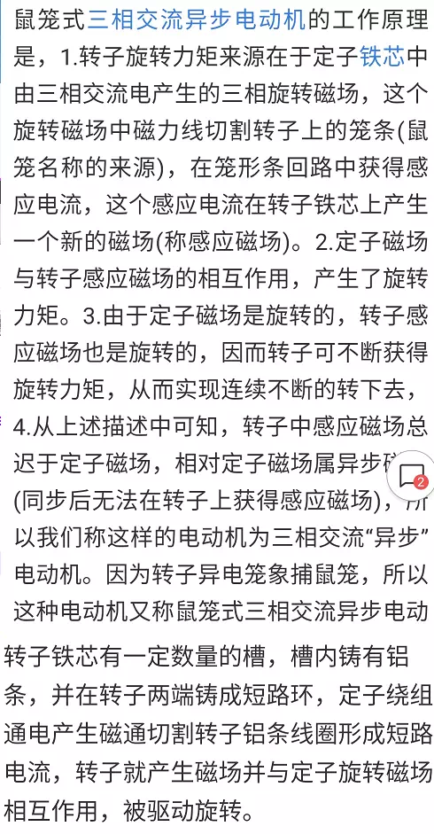

启动电流和延时时间计算
1、星三角启动的电机（以22KW为例），实际运行必须是三角形运行才能达到额定值，其额定值电流为线电流I=22÷0.38÷1.732÷COSφ=44A左右。而流过电机各相绕组的相电流（包括为实现三角形连接的外部电缆，即接触器至电机线端的电缆）=线电流÷1.732=25.4A。
2、三角形运行的电机在星形连接运行时，线电流=相电流，由于加在电机各相绕组的相电压=线电压÷1.732=220V，因此线电流=相电流=25.4A，实际启动电流应按25.4A来乘以启动倍数，而不是按44A来计算启动电流。
3、电缆的选择是按负荷实际长期电流选择的，不是按启动电流选择的，因此，星三角启动的电缆应按25.4A来考虑。但，电源侧的电缆以及控制柜断路器至接触器的电缆必须按44A考虑，因为流过这段电缆的电流为线电流，只有接触器后至电机接线端的电缆才是流过相电流。
4、选接触器时也要根据实际情况选择，空载不频繁启动时，两个32A一个25A接触器即可，带负载启动、频繁启动或接触器质量较差，应适当加大接触器型号。电机三角运行，星形启动，启动电流是三角直接启动的1/3。可以用功率/3/220/功率因数得三角运行电流再以1.5-2.5算出三角的启动电流。在乘1/3就是星型的启动电流。好象结果与三角运行电流差不多，就以额定电流选接触器和断路器好了。实际购买的星三角启动器的两个接触器是型号电流一样大的。就是运行额定电流选的。

双速电机
双速电动机的定子绕组的联接方式常有两种：一种是绕
组从三角形改成双星形，如下图(a)所示的连接方式转换成
如图(c)所示的连接方式。
另一种是绕组从单星形改成双星形，如图所示的连接
方式转换成如图所示的连接方式，这两种接法都能使电
动机产生的磁极对数减少一半即电动机的转速提高一倍
制动
能耗制动又被称为动力制动，电动机的能粍制动是把电动机的定 子交流电源切断而而接入直流电源，使电动机制动，其原理接线 如右图所示。在需要停车时，先将电动机的电源切断，同时将苴 流电源与定子绕组接通，则在电动机内产生一个固定磁场，这时 由于系统的惯性，电动机的转子仍然按照原方向继续旋转，它切 割定子的固定磁场而感应电势（其方向可由右手定则决定〉，使 转子出现感应电流，转子电流与定子磁场相互作用所产生的转矩 与转子旋转方向相反〈根据左手定则〉，即产生一个制动转矩， 如图中的右边图所示。在制动转矩的作用下，电动机很快停下 来。甶于这种方法是把转子的动能转换成电能来进行制动，所以 称为能耗制动。
这种制动能里消耗小，制动平稳，但是需要直流电源。在有些机 床中会采用这种制动方法。
鼠笼转子和绕线转子电动机 
三相异步电动机的通断条件 电动机平面布置图